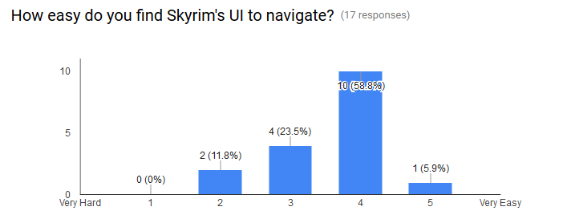

Assignment One
The screen based interface that will be evaluated is Skyrim on PC. Skyrim uses the same UI for PC and console. Many reviews for the PC version suggest that while this UI may be easy to use on console it can be unintuitive on PC.
The video above shows the menu screens being navigated on PC using a mouse.
A further reason for evaluating Skyrim's interface is that currently two of the most endorsed Skyrim mods on Nexus alter the UI of the game in some way.
The most popular one, SkyUI, overhauls many of the menu screens in the existing interface. SkyUI describes itself as a "PC friendly UI mod for Skyrim" suggesting the creators don't think the UI is already "PC friendly".
Heuristics Analysis - Qualitative
The first evaluation method is a heuristics analysis. The heuristics used were Pinelle's heuristics for video games. These heuristics were specifically designed for game usability. Pinelle defines "game usability as the degree to which a player is able to learn, control, and understand a game".
Provide consistent responses to the user’s actions.
The consistency of the responses depends on the user's input. Switching between input methods for the menu screens for example switching between mouse and keyboard can cause strange results where the wrong option is selected because the mouse was resting on one option and the arrows being used to to get another. A way to improve this would be to only allow one method such as the mouse to be used in the menu screens, this would prevent any inconsistent results.Allow users to customize video and audio settings, difficulty and game speed
On PC Skyrim auto-detects the ideal video and audio settings and sets them. There is also the option to manually change any of those settings, however changing them above what the computer can run will effect how the game runs potentially making it unplayable. Audio and video settings can only changed before the game is launched using a separate tool or once them is running from the pause menu. The image below shows the pause menu where the player can access sub menus for settings for audio, visual and game play. The combination of both auto detect and customising the controls allows players to just start the game without altering settings or allow other players to customise their settings.
The combination of both auto detect and customising the controls allows players to just start the game without altering settings or allow other players to customise their settings.
Provide unobstructed views that are appropriate for the user’s current actions and Provide users with information on game status.
The compass at the top of the screen shows nearby landmarks and currently marked quests at all times. The part of the UI showing the health, magicka and stamina levels only show when in combat or when they're decreasing. However if the player is being affected by something such as poison or a spell it isn't always clear the player has to check in a menu to see what effects are active on them. This is another areas addressed by popular UI mods such as SkyUI, the mods displayed active effects on the character on screen allowing the user to clearly see the character's status, changes like this could be implemented in the base game.
The part of the UI showing the health, magicka and stamina levels only show when in combat or when they're decreasing. However if the player is being affected by something such as poison or a spell it isn't always clear the player has to check in a menu to see what effects are active on them. This is another areas addressed by popular UI mods such as SkyUI, the mods displayed active effects on the character on screen allowing the user to clearly see the character's status, changes like this could be implemented in the base game.
Provide intuitive and customizable input mappings and Provide controls that are easy to manage, and that have an appropriate level of sensitivity and responsiveness.
 The keyboard controls are easily changed in an in game menu for controls, there's also a game play menu that allows for axis inverting and mouse sensitivity altering. Both these features imrpove the usability of the game allowing players to tailor the input settings to their play style.
The keyboard controls are easily changed in an in game menu for controls, there's also a game play menu that allows for axis inverting and mouse sensitivity altering. Both these features imrpove the usability of the game allowing players to tailor the input settings to their play style.
Provide instructions, training, and help.
The game starts for a tutorial teaching players the basic controls however some in game systems aren't explained and have to be learned through playing the game.Focus Groups - Quantitative
The second method used was focus groups using an online survey. A survey was used to gain quantitative answers about people opinions on the Skyrim UI. Each question was multiple choice or a rating on a scale of one to five.
The first question was asking participants how important they found the menu UI in a game to be on a scale of 1 to 5,1 being unimportant and 5 being very important. The mean result was 4.24, as the result is skewered towards the higher end of the scale this suggests most participants find the game UI important.

Graph showing how important participants find game UIs
Only 26.7% of participants said they had used UI mods on Skyrim. This low number could be due to them playing on console and therefore not having the option for UI mods or it could be due to them being content with the default UI.
When asked how much they think UI improve the UI on a scale of 1 to 5 one being they make no difference and 5 being they improve the game a lot. The average answer was 3.75 suggesting that a majority of participants believed that using UI mods improved Skyrim.

The image below shows an example of a UI mod called SkyUI, it's the most popular mod for Skyrim on nexus.

When asked how easy participants find Skyrim's UI to navigate on a scale of 1 to 5 the answers ranged from 2 to 5. The average was 3.59, this answer varied a lot meaning it's unclear whether Skyrim's UI is easy to use or not.
The final question was whether participants thought Skyrim gave them tutorials and help in game, again there was a wide range of answers from 2 to 5 and the average was 3.0. This variety could be caused by users skipping parts of the tutorial or from having previous experience with the series.
Possible issues with the answers given by participants are firstly that only 17 people took part, this small sample size means answers may not be valid for a larger group. Secondly the answers are all numerical or multiple choice meaning what factors lead to those answers aren't there. Finally while many of the questions where based on Pinelle's heuristics they could be written in a bias way that effects the answers